Một chiều đầy mây
Những mái nhà, lớp nhà kính và bầu trời xám khiến mình nhận ra đôi khi chỉ cần đứng yên cũng đủ thấy nhẹ lòng.
Xin chào, tôi là
Mình thích du lịch cũng thích giữ lại những khoảnh khắc rất đời: một chiều Đà Lạt đầy mây, một con đường thông, một buổi biển Nha Trang và một đêm chợ sáng đèn.
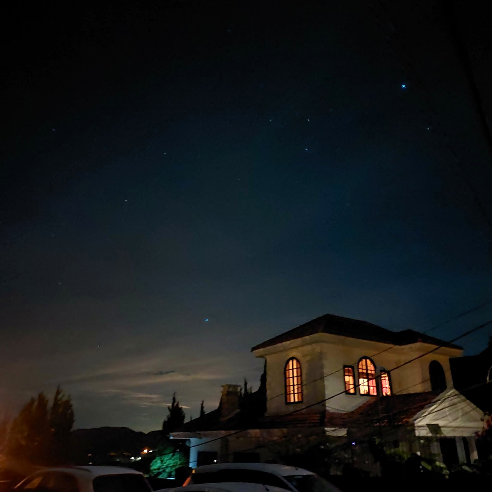
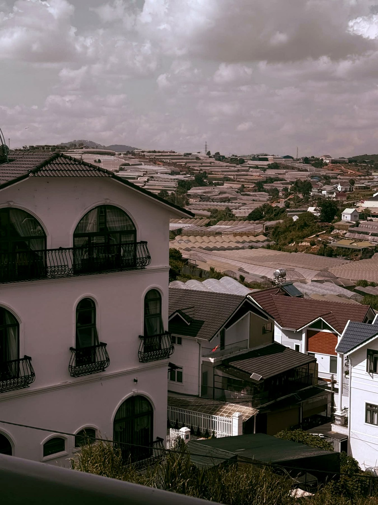
Ngoài công việc, mình muốn có một góc riêng để lưu lại ảnh, chuyến đi, suy nghĩ và những câu chuyện nhỏ của mình.
Những mái nhà, lớp nhà kính và bầu trời xám khiến mình nhận ra đôi khi chỉ cần đứng yên cũng đủ thấy nhẹ lòng.
Ánh đèn, tiếng người, mùi đồ nướng và cái lạnh rất riêng của Đà Lạt tạo thành một ký ức khó quên.
Biển rộng, gió nhẹ và màu trời thay đổi từng chút một. Có những khoảnh khắc không cần nói nhiều, chỉ cần giữ lại bằng một tấm ảnh.
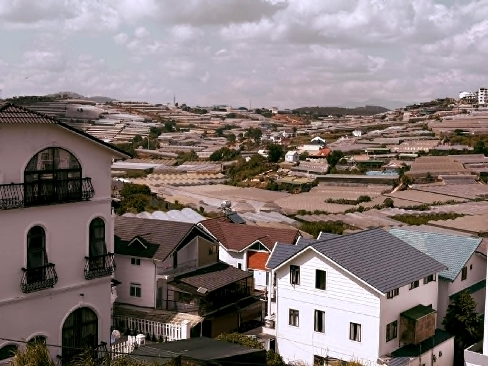
Đà Lạt
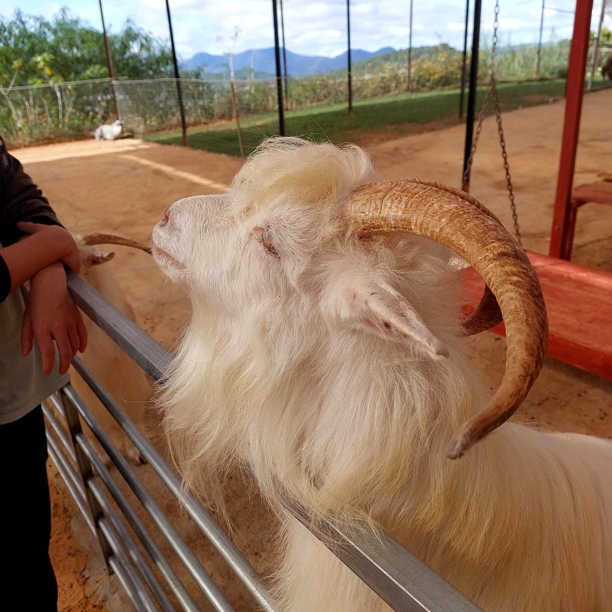
Đời sống
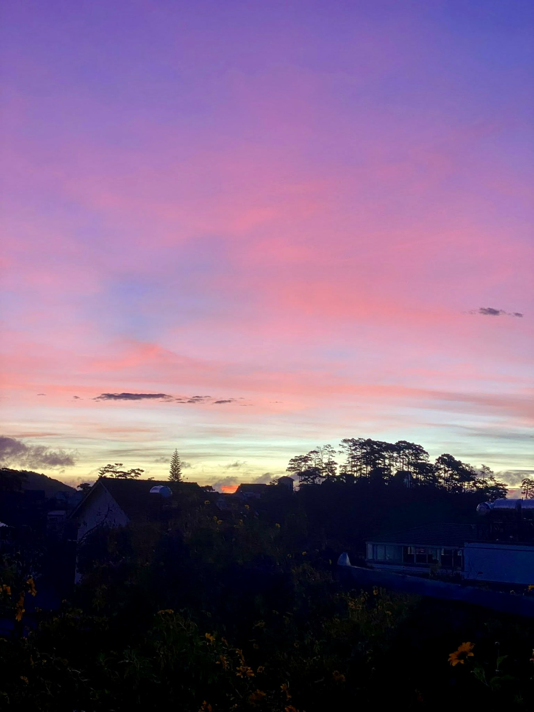
Bầu trời
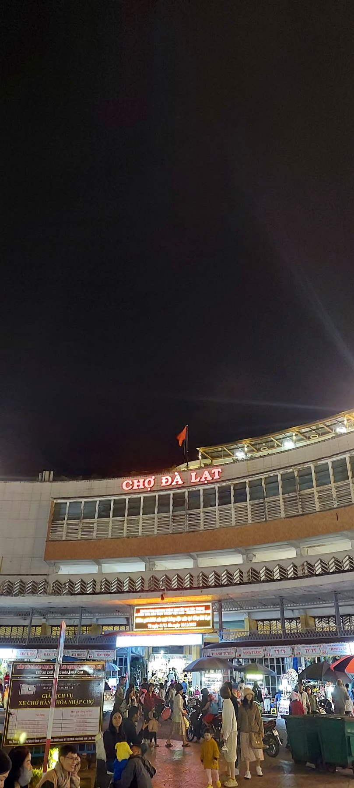
Ban đêm
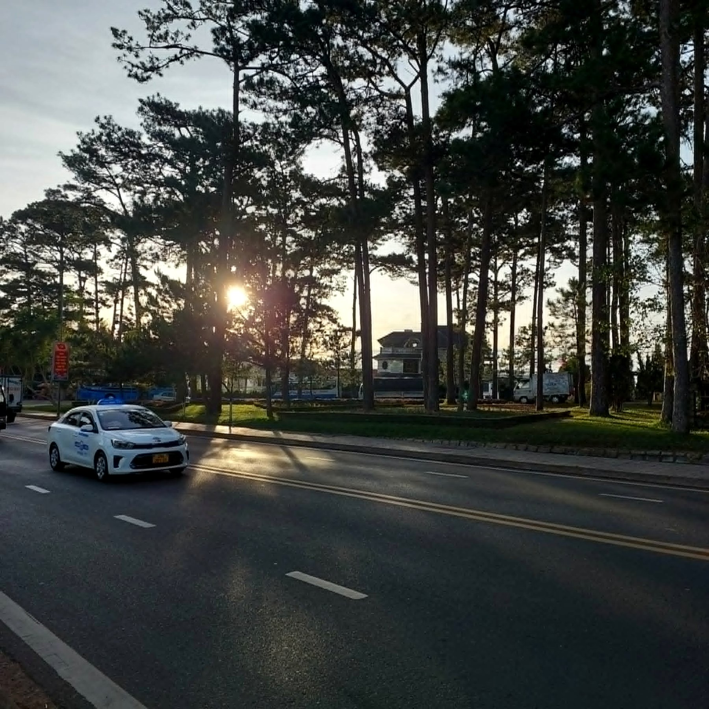
Đà Lạt
Ban đêm
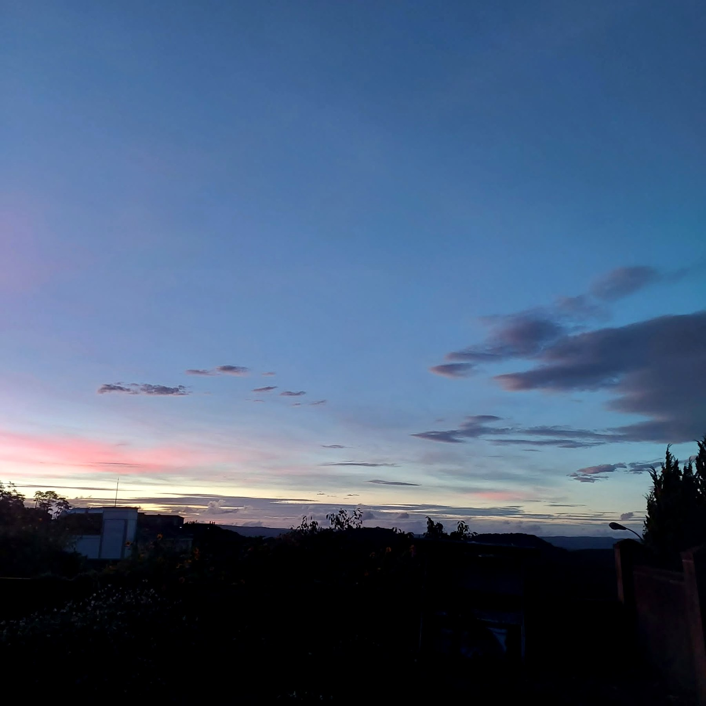
Bầu trời
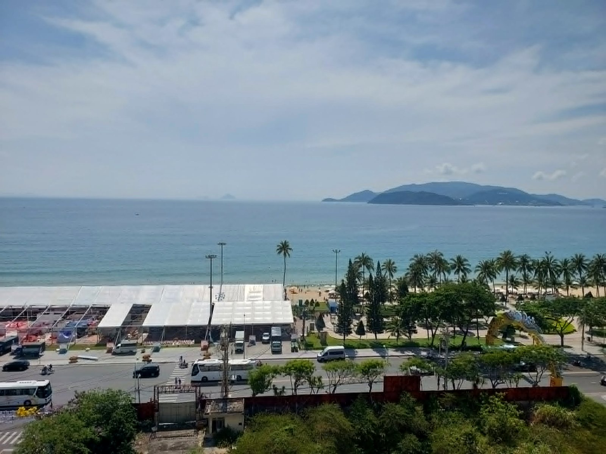
Nha Trang
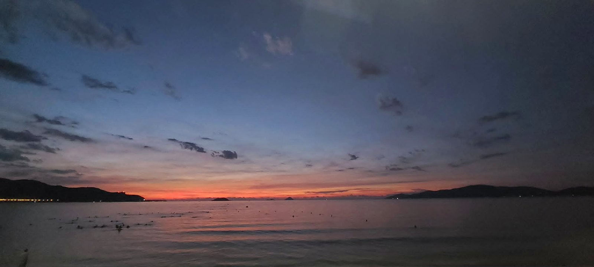
Nha Trang
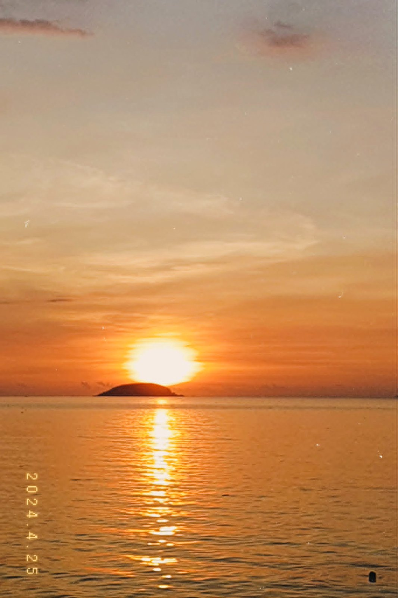
Nha Trang